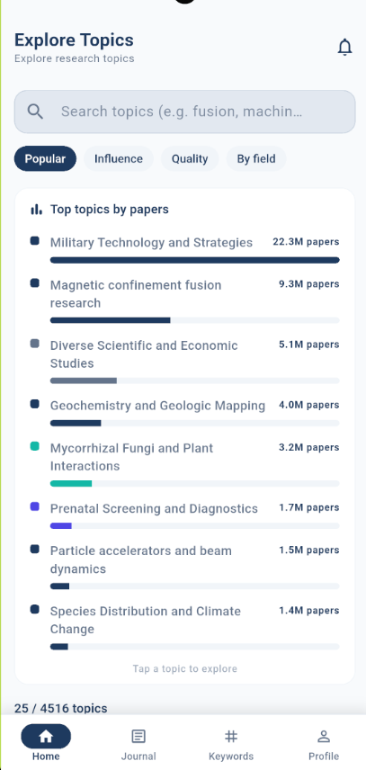
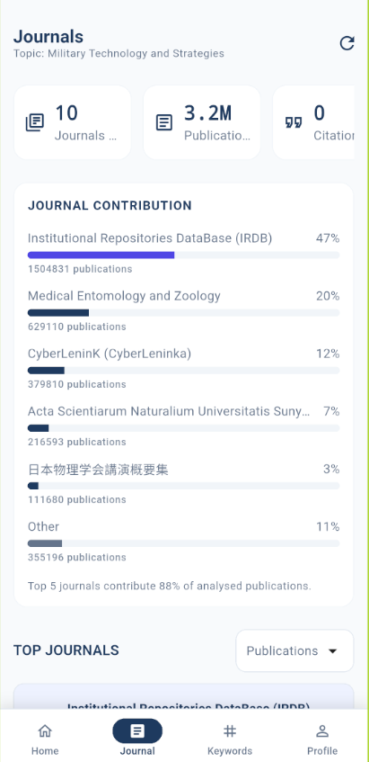
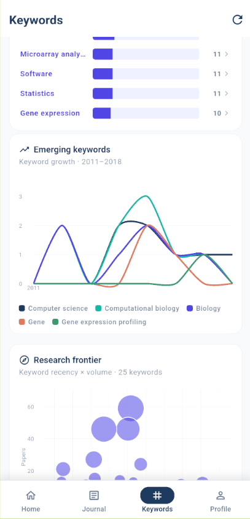
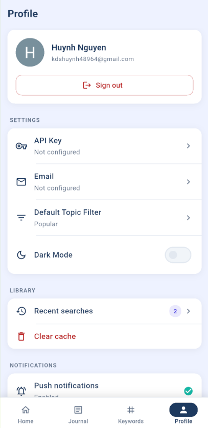
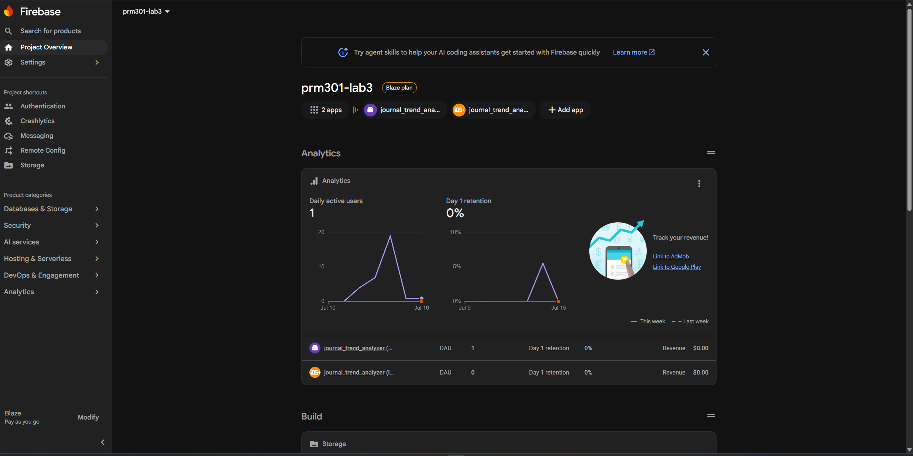
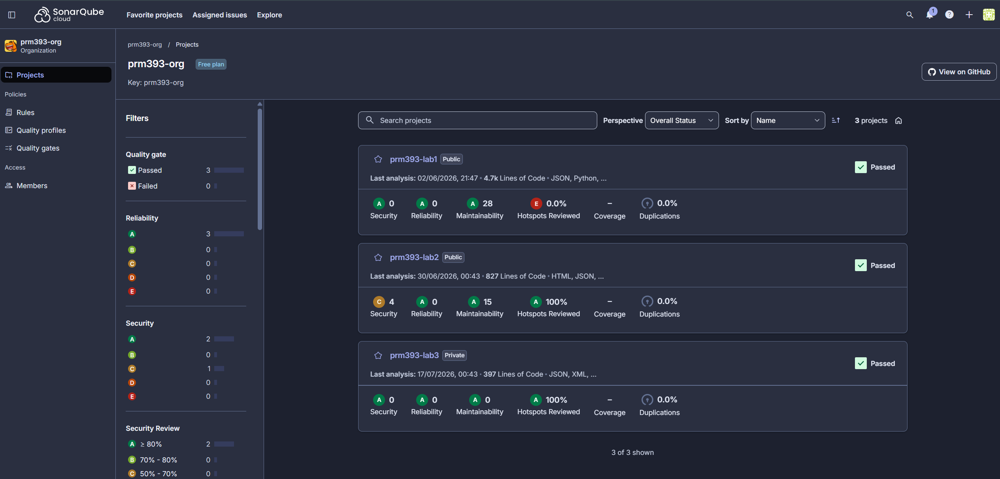

Final project report covering OpenAlex research analytics, Firebase integration, MVVM architecture, automated Patrol testing, and AI-assisted quality review.
Journal Trend Analyzer is a Flutter mobile application that helps users explore research topics and inspect publication, journal, keyword, and author trends. OpenAlex is the authoritative publication data source; Firebase provides identity, cloud storage, messaging, analytics, crash reporting, and remote configuration. Four persistent navigation destinations— Home, Journals, Keywords, and Profile— match the Lab 03 assignment specification.
| Area | Implemented capabilities | Status |
|---|---|---|
| Authentication | Google Sign-In, Firebase Authentication user profile, sign-out and auth gate. | Complete |
| Home | Topic discovery/search, ranked topics, dashboard KPIs, yearly trend and publication paging. | Complete |
| Publication | Title, authors, year, journal, citations, DOI/original link and abstract decode. | Complete |
| Journals | Contribution ranking, citation/publication stats, detail drill-down. | Complete |
| Keywords | Frequency bars, emerging-keyword trends, research-frontier scatter and author ranking. | Complete |
| Profile | User identity, notifications, PDF export/history, Remote Config, Crashlytics and sign-out. | Complete |
The project uses an MVVM-compatible layered design organized by feature (Clean Architecture layout). Screens remain focused on rendering and interaction. Riverpod notifiers/providers act as ViewModels, repositories expose domain operations, and services isolate OpenAlex / Firebase SDKs so UI never calls cloud APIs directly.
| Layer | Main components | Responsibility |
|---|---|---|
| Model | Work, Author, JournalSummary, UserSettings, notification & report models | Typed application data, OpenAlex parsing, settings and report snapshots. |
| View | Login, Home, Journal, Keyword, Profile and detail screens | Responsive UI; loading / error / empty / data states; navigation. |
| ViewModel | AuthViewModel, HomeViewModel, JournalViewModel, ProfileViewModel, … | Async orchestration, state transitions, validation and UI notifications. |
| Data | PublicationRepository, ApiClient, AnalyticsService, StorageService, … | HTTP / Firebase access, PDF generation and failure translation. |
search_topic.Either<Failure, T>).report/{uid}/….
The UI uses Material 3 with a navy accent, shared typography/colors, rounded cards and explicit
loading/error/empty states. Bottom navigation keeps four destinations alive via
StatefulShellRoute.indexedStack. Selecting a topic drives Journals and Keywords analysis.


Home discovers and ranks research topics. After a topic is selected, Journals show KPI cards (journals, publications, citations) and contribution bars. Publication detail exposes title, authors, year, journal, citations, DOI and decoded abstract.
Keywords provide frequency ranking, emerging-keyword trends and a research-frontier scatter view. Profile consolidates identity, settings, library, notifications and Firebase demonstration actions.


Keyword and journal rows open detail screens with trends and ranked authors. Profile is also the verification surface for PDF export, Remote Config, Crashlytics and FCM.
Firebase project prm301-lab3 (Blaze plan) hosts Android and iOS apps for
journal_trend_analyzer. All SDK calls are wrapped in lib/firebase/ services so
ViewModels remain testable and UI stays free of direct SDK usage.

| Firebase service | Application use | Evidence |
|---|---|---|
| Authentication | Google Sign-In, user profile, sign-out, router auth gate. | Login / Profile · Patrol TC1 & TC11 |
| Storage | Upload / list / open / delete PDF reports under report/{uid}/…. |
Profile export · Patrol TC9 |
| Cloud Messaging | Foreground / background / opened handling, local notifications, FCM token, notification center. | Profile notifications panel |
| Analytics | Seven required events with contextual parameters via AnalyticsService. |
Firebase Analytics / DebugView |
| Crashlytics | Global fatal handlers, handled exception and deliberate test crash on Profile. | Crashlytics console · Profile demos |
| Remote Config | max_journals_displayed, max_keywords_displayed. |
Profile demo · Patrol TC10 |
| Event | Parameters | Trigger |
|---|---|---|
login | login_method = google | Successful Google authentication |
search_topic | keyword | Topic analysis starts |
view_publication | publication_title, publication_year | Publication detail opens |
view_journal | journal_name | Journal detail opens |
view_keyword | keyword | Keyword detail opens |
export_pdf | topic | PDF generated and uploaded |
logout | — | User signs out |
The generated A4 report includes the selected topic, summary metrics, yearly publication trend,
top journals and top publications. Files are uploaded with metadata; Profile exposes history
and downloadable URLs. Analytics logs export_pdf after a successful upload.
Profile surfaces at least two remote parameters and two crash actions for verification:
max_journals_displayedmax_keywords_displayedrecordError“Handled exception” keeps the app running while still sending a diagnostic event. “Test crash” terminates the process and is used only to confirm Crashlytics ingestion after restart. FCM token and notification center are also available on Profile for Messaging verification.
Incoming FCM messages are displayed locally (foreground) and stored in the in-app notification center so users can review research alerts without leaving the Profile tab.
report/{uid}/….
The final suite was executed on an Android emulator using the real app, Google account picker,
OpenAlex API and Firebase project. Tests live in patrol_tests/ and map one-to-one to the
eleven Lab 03 scenarios. Latest result: 11/11 passed.
| # | Scenario | Main verification | Result |
|---|---|---|---|
| 1 | Google Sign-In | Native account selection → Home | Pass |
| 2 | Topic Search | Publication / topic results displayed | Pass |
| 3 | Publication Details | Metadata, authors and abstract | Pass |
| 4 | Journals Navigation | Statistics and journal results | Pass |
| 5 | Journal Details | Works, citations and analysis | Pass |
| 6 | Keywords Navigation | Frequency statistics and rankings | Pass |
| 7 | Keyword Details | Trend and ranked authors | Pass |
| 8 | Profile Navigation | Identity, reports, notifications | Pass |
| 9 | PDF Export | Report generation + Storage upload URL | Pass |
| 10 | Remote Config | Both dynamic values displayed | Pass |
| 11 | Logout | Return to Google Sign-In screen | Pass |
authentication_test.dart (TC1, TC11)publication_test.dart (TC2, TC3)journal_test.dart (TC4, TC5)keyword_test.dart (TC6, TC7)profile_test.dart (TC8)export_test.dart (TC9)remote_config_test.dart (TC10)WidgetKeys.flutter run before Patrol to avoid APK conflicts.SonarQube Cloud organization prm393-org was used for static analysis across the PRM393 lab series. Project prm393-lab3 reports Quality Gate Passed with Reliability / Security / Maintainability grade A (last analysis 17/07/2026).

| Finding | Impact | Resolution | Status |
|---|---|---|---|
| Import directives inconsistently ordered | Reduced readability / analyzer consistency | Reordered imports in affected screens/providers | Fixed |
| Mutable list used where a const list was enough | Unnecessary runtime allocation | Converted decorative child lists to const |
Fixed |
| Remote Config E2E asserted hard-coded defaults | False failures when cloud values change | Assert rendered parameter names instead of fixed numbers | Fixed |
| Combined Patrol scenarios collapsed reported cases | Evidence did not map 1:1 to assignment | Split into eleven independently reported tests | Fixed |
The Journal Trend Analyzer satisfies the Lab 03 functional, Firebase, architecture
and testing requirements. The team delivered a production-style Flutter client with OpenAlex
analytics, six Firebase services, eleven passing Patrol E2E scenarios, and a SonarQube Quality
Gate Pass (grades A) for prm393-lab3.
The application demonstrates maintainable MVVM layering (Riverpod ViewModels + repositories), evidence-backed cloud integration, and an automated validation path suitable for academic assessment and further product iteration.
| Member | Student ID | Primary focus areas |
|---|---|---|
| Nguyễn Đức Huỳnh | SE193874 | Architecture, Firebase integration, report & quality evidence |
| Võ Việt Minh Đức | SE193219 | Home / Journals UI & OpenAlex analytics flows |
| Nguyễn Minh Châu | SE180582 | Keywords analytics, charts and detail screens |
| Hồng Lê Đăng Khoa | SE182425 | Profile, PDF export, Patrol E2E scenarios |